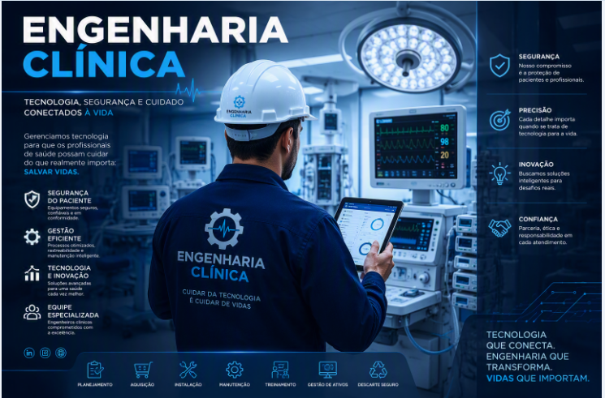

GRUPO FLEURY
SIGEM — Sistema Integrado de Gestão de Engenharia Clínica
13/08/2026 12:58
SIGEM — Sistema Integrado de Gestão de Engenharia Clínica
Garantir a disponibilidade, segurança e rastreabilidade dos ativos médicos, contribuindo para a excelência dos serviços prestados pelo Grupo Fleury.

Gerente de Engenharia Clínica • Grupo Fleury
"A tecnologia salva vidas quando é gerenciada com excelência."
Engenharia Clínica • Grupo Fleury